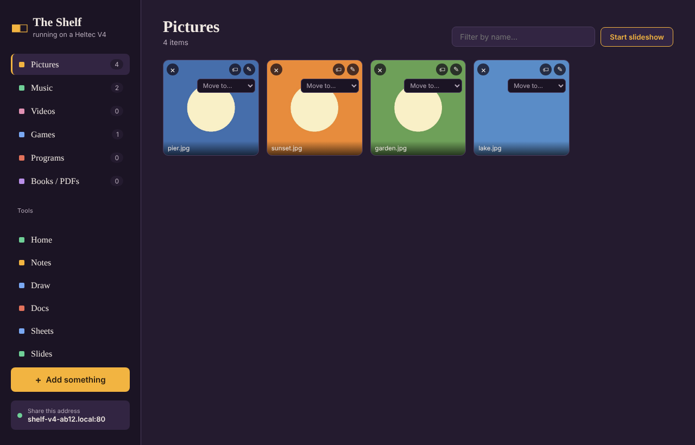
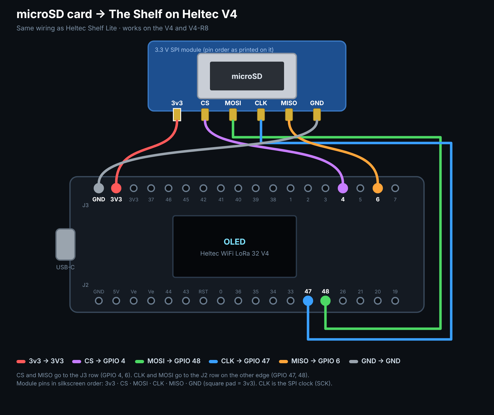
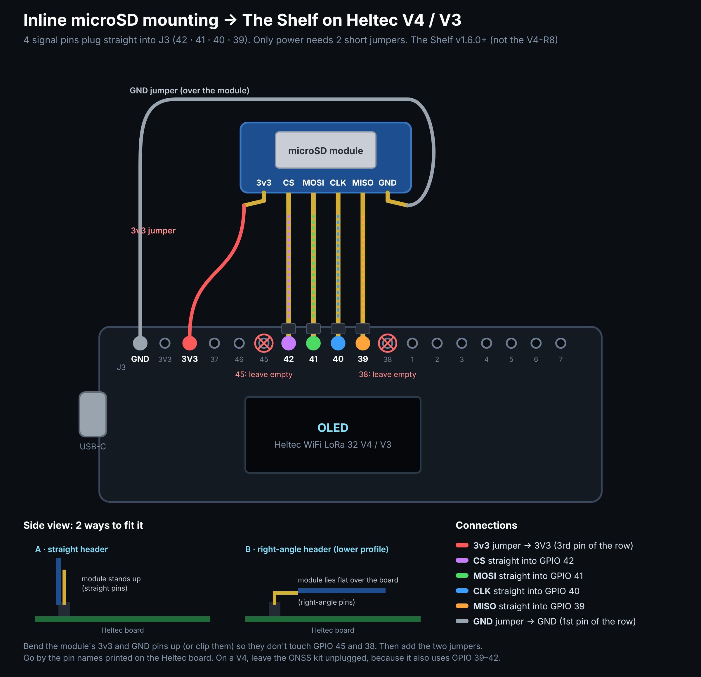
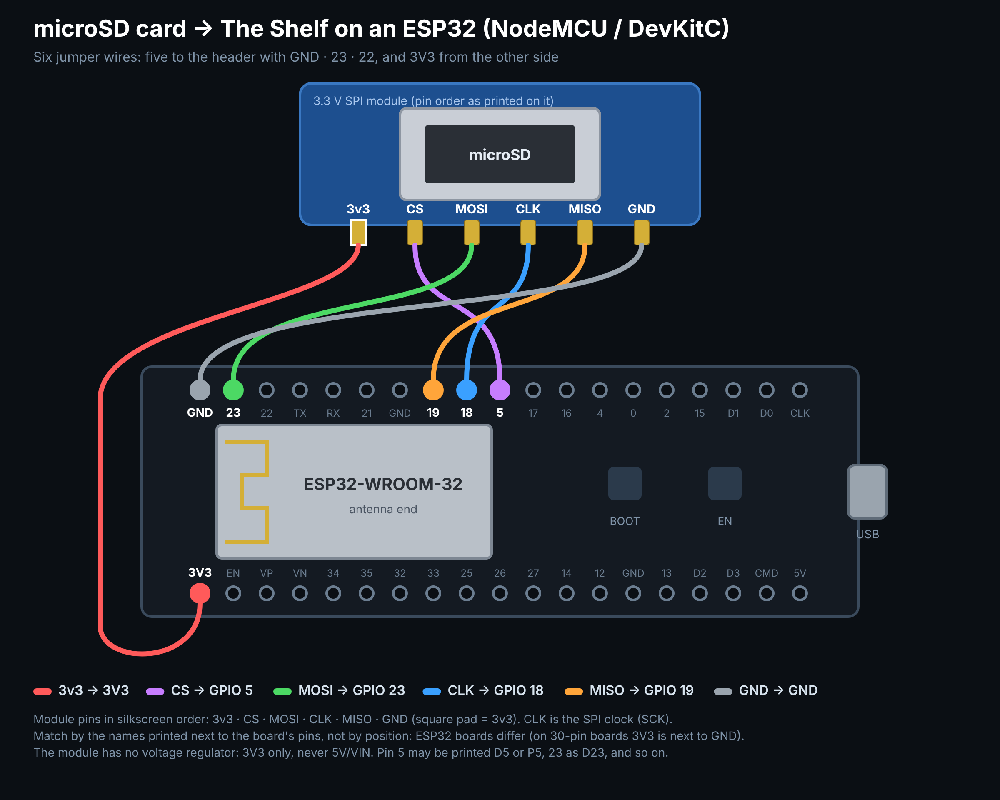
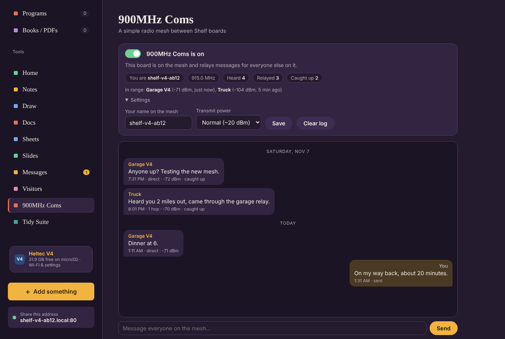
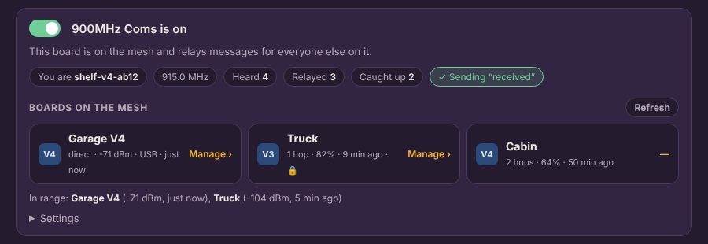
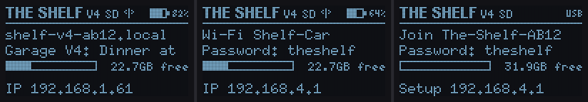

The full Shelf web app for your home, served from a little Heltec LoRa board and a microSD card. Photos, music, videos, games, books, Notes, Docs, Sheets, Slides, Draw, Tidy Suite and Messages. It even chats with the other Shelves in your house.

Plug the board into this computer with a USB data cable, pick your board, then choose its port when Chrome asks. This works in Chrome or Edge on a PC, Mac or Raspberry Pi. It's a 5 MB install, so give it a minute or two.
theshelf) at http://10.1.1.250. Needs a microSD card. If the port doesn't connect, hold BOOT while you click Connect.
Not sure which you have? Install the standard V4 one. The board's settings page shows how much PSRAM it found; if it lists none, reinstall with the R8 button.
Use the small 3.3 V SPI module whose pins read 3v3 · CS · MOSI · CLK · MISO · GND. It has no regulator: 3V3 only, never 5V. The card goes on four neighbouring J3 pins, the same on the V4 and the V3. With no card fitted, The Shelf uses about 9 MB of a V4's own flash, or about 2.5 MB of a V3's.

| Module pin | Heltec V4 / V3 pin |
|---|---|
| 3v3 | 3V3 |
| GND | GND |
| CS | GPIO 42 |
| MOSI | GPIO 41 |
| CLK (SCK) | GPIO 40 |
| MISO | GPIO 39 |
Or plug it straight in. 42 · 41 · 40 · 39 are in the same order as the module's CS · MOSI · CLK · MISO. Bend up its 3v3 and GND pins so they skip GPIO 45 and 38, then add two short jumpers to GND and 3V3 at the start of the row.

On a V4, leave the GNSS kit unplugged: it shares GPIO 39–42. V4-R8: GPIO 40 powers its screen, so it keeps the older wiring: CS 4, MISO 6, CLK 47, MOSI 48 (R8 diagram). Coming from v1.5 or earlier on a V4 or V3? Move the four signal wires to the new pins. Use a FAT32 card; 32 GB cards come that way.
Plain ESP32 (NodeMCU / DevKitC): the card goes on the ESP32's usual SPI pins. It must have a card: the 4 MB of flash is all taken by the firmware, its update loader and the web app. A 128×64 SSD1306 screen on GPIO 21 (SDA) and 22 (SCL) is optional; with one, it shows the same status screen as the Heltec boards.

Wiring it with the board upside down (pins pointing up)? Flipped-over diagram.
Fewer wires: on a 38-pin board the module can plug straight onto the header at GND · 19 · 18 · 5 · 17, turned around, with one jumper for 3V3 (firmware 1.10.1 and later finds the card on either wiring). In-line diagram · on the bottom side.
Copying or backing up a card on Windows: SD Card Imager saves a whole card to one compressed image file and writes it back onto another card (Windows 10/11, nothing to install: unzip and double-click SD Card Imager.cmd).
| Module pin | ESP32 pin |
|---|---|
| 3v3 | 3V3 |
| GND | GND |
| CS | GPIO 5 |
| MOSI | GPIO 23 |
| CLK (SCK) | GPIO 18 |
| MISO | GPIO 19 |
theshelf. Join it and open http://10.1.1.250. Joining your home Wi-Fi is optional, from its settings page.)theshelf. The setup page opens; if it doesn't, go to http://192.168.4.1.http://shelf-v4-xxxx.local (shelf-v3-xxxx.local on a V3, shelf-esp32-xxxx.local on a plain ESP32).On the board's settings page, choose Use its own Wi-Fi and it makes its own network, so The Shelf works in the car, at camp, or anywhere without Wi-Fi. Join it and open http://192.168.4.1. Your phone shows "No Internet Connection" and keeps using cellular data for texts and apps while it stays connected to The Shelf. The screen shows the network name, the password, the IP, and a battery meter, so you can run it from a LiPo.
A 900MHz Coms tab lets your boards text each other over the V4's LoRa radio, with no Wi-Fi or internet needed. Switch it on and you see the message log and can send to everyone. V3 and V4 boards share the same mesh. Every board with Coms on also relays for the others, with no hop limit, and a board that joins late is caught up on the last 12 hours by its neighbors. Fit the LoRa antenna before switching it on.
2.4 GHz too. Every board also sends and hears Coms over 2.4 GHz (ESP-NOW, the ESP32's own board-to-board frames), so plain ESP32 boards join the mesh through their 2.4GHz Mesh Coms tab, and Heltec boards carry messages between the 2.4 GHz and 900 MHz boards. No router in between, and phones can stay joined to a board's own Wi-Fi. Boards hear each other over 2.4 GHz only on the same Wi-Fi channel: channel 1 on their own Wi-Fi, the router's channel on a home Wi-Fi. When a board meets one it hasn't heard for 20 minutes, it asks for the last 12 hours again, so messages travel with people carrying boards around.

The Coms tab lists every board on the mesh. Click one, type its admin password, and connect. You can check its battery, Wi-Fi and storage, turn read-only on or off, wake or sleep its screen, set its power, list its files, or restart it, all over the radio. Commands are signed with the board's password (never sent) rather than encrypted, as amateur rules require.

Set an admin password on the board's settings page and switch on read-only: everyone can browse, play and chat, but only someone with the password can change things. A switch in the sidebar unlocks write mode for 8 hours. Forgot the password? Hold PRG for 12 seconds.
The address to open is always on the bottom line, and the battery meter is in the top corner. The screen sleeps after 5 minutes; press PRG to wake it. New Coms messages show for 15 seconds.

From v1.9, open the board's settings page and choose Update firmware (or go to /update on the board). Check for update downloads the newest version from this site and installs it; your files and settings stay. On the board's own Wi-Fi, where there's no internet, download your board's file first (V4 · V4-R8 · V3 · ESP32) and use Update from a file. The board's screen shows the progress. The update page is built into the firmware, so it still works if an update is ever cut off.
Save everything on the board's own flash to one compressed file: the firmware, your Wi-Fi, admin password, Coms history, and any files kept on the board when no card is fitted. Restore puts it all back exactly as it was, on this board or a replacement of the same kind. Plug in over USB-C like an install. The microSD card is backed up separately, over Wi-Fi, from the board's settings page.
Reads the whole flash (16 MB on a V4, 8 MB on a V3) and saves a .bin.gz. About 3–5 minutes.
Pick a backup file. It replaces everything on the board's flash. The card isn't touched.
Source, wiring and build notes: github.com/hardwaremack-prog/The-Shelf-Heltec-V4900mhzMesh · The Shelf itself: the-shelf